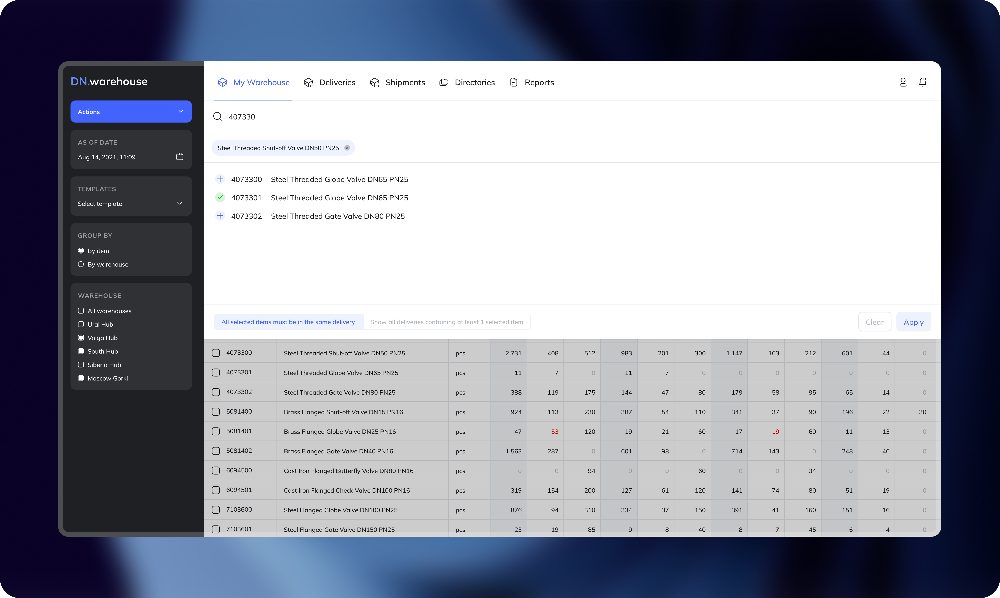
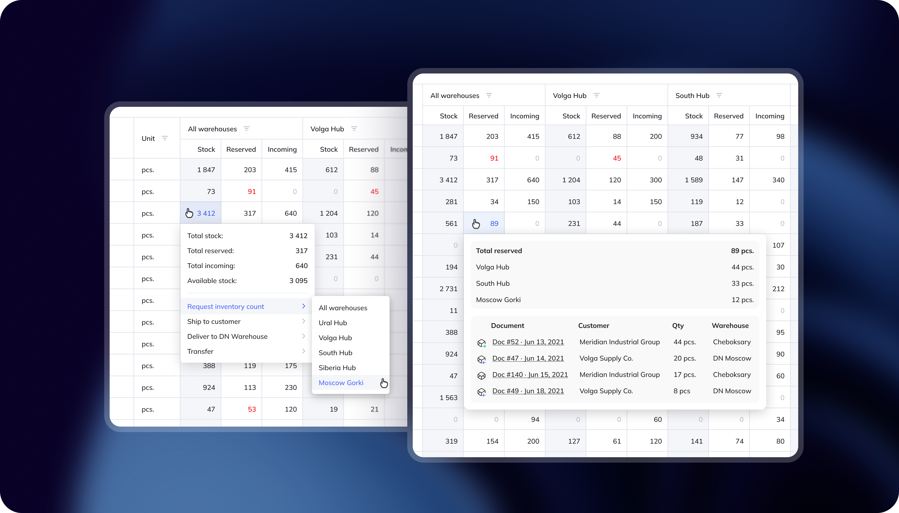
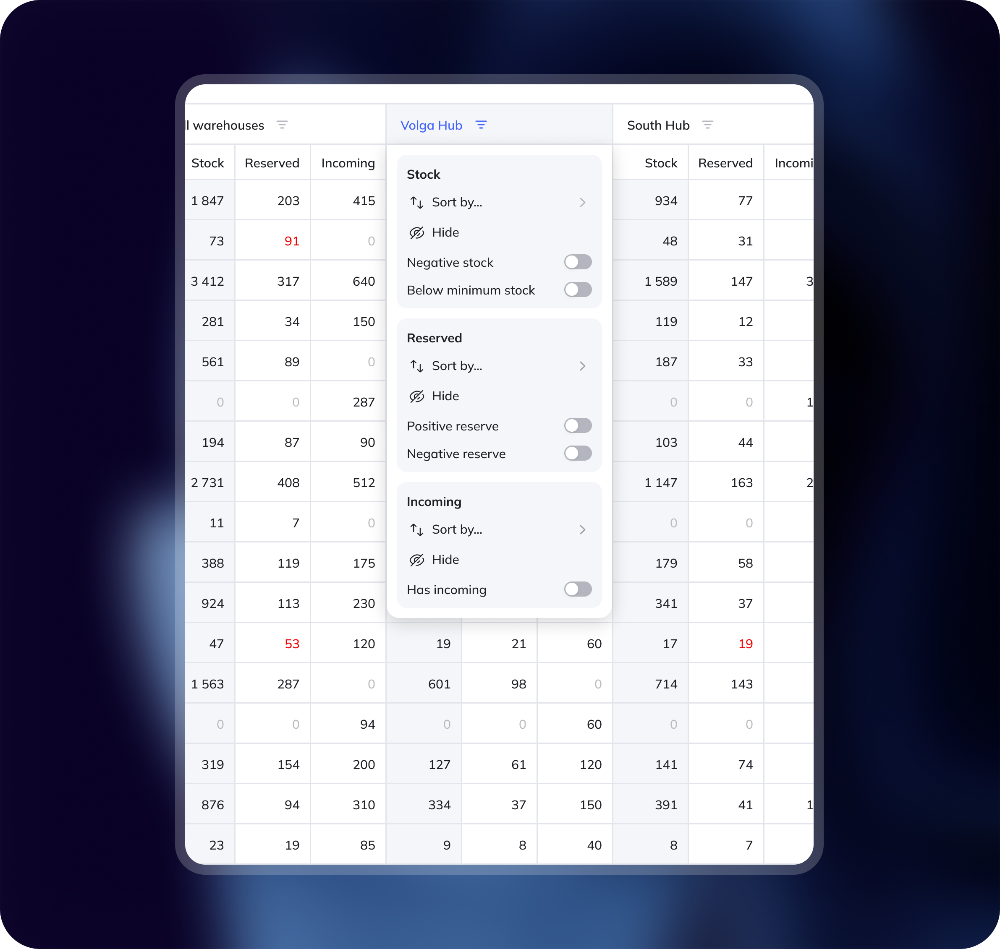
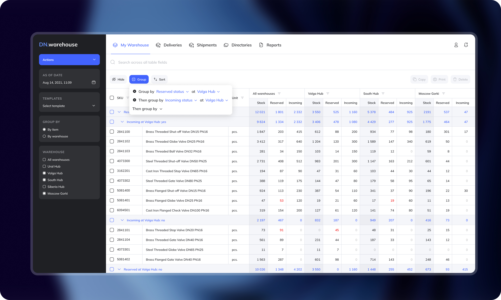
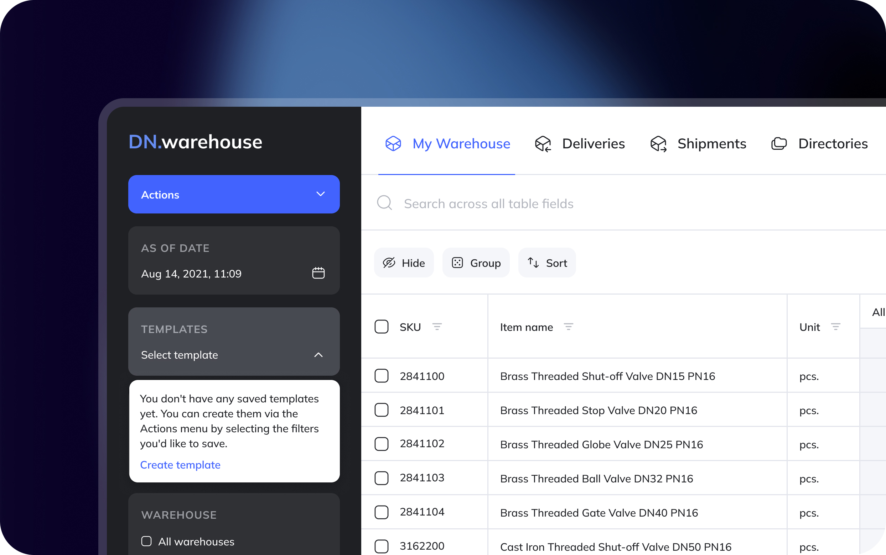

DN Warehouse · Part 1 of 3
Inventory visibility
The problem
Warehouse managers at DN started every day the same way. Open 1C — check stock levels. Open Excel — check what's reserved. Call a colleague — confirm what's actually on the shelf right now. Three tools. One question. Every single morning.
We spent time at the warehouses before drawing anything — just watching. Counting. One manager made 11 context switches in a 20-minute session. Not because she wanted to. Because there was no other way.
The data existed. It just lived in the wrong places.
The goal
Any stock question should be answerable in one click. No switching, no calling, no cross-referencing.
One table to replace three tools

The entire inventory view became a single dense table — real-time stock, reservations, and incoming shipments, all warehouses shown side by side.
The key decision: parallel columns, not tabs. Managers compared locations constantly throughout the day. Every tab switch meant losing the mental picture of what they'd just read. We measured how often people switched between views — and then removed the need to switch at all.
Search as the primary entry point

We mapped how operators find items across eight observation sessions. Browsing by category almost never appeared. Everyone typed a SKU fragment or part of a product name. The sidebar navigation we'd designed was being skipped entirely. So we cut it.
Search takes full focus on load. Results appear instantly with a preview tag of the matched item. The action bar at the bottom only appears when items are selected — and only shows actions that are valid for that selection.
Making reservations traceable

"89 reserved" used to mean nothing actionable. You knew stock was held somewhere — but by whom, for what, at which location? Finding out meant leaving My Warehouse, opening a separate module, filtering by item, and manually matching document numbers against each other.
We timed it with several users: average 4 minutes per lookup. Now it's one click from anywhere in the table. Total reserved broken down by warehouse. The exact documents behind each number — document ID, customer name, quantity, destination.
4 min → 30 sec
Stock lookup time
Filters built around how warehouse teams think

Standard table filters let you sort and hide columns. These go further.
During field observation, two daily checks kept appearing that no standard filter could handle: "show me everything that's gone negative" and "show me what's about to drop below minimum threshold." These weren't edge cases. They came up in nearly every session as part of the daily morning routine.
So we built them directly into the column configuration — negative stock toggle, below-minimum toggle — right alongside sort and hide. Each warehouse column has its own independent filter panel.
Grouping as operational analysis

A card sorting session with the warehouse team revealed something consistent: managers think in operational status first. What's reserved, what's incoming, what's sitting untouched.
Group by reservation status at a specific warehouse, then by incoming status — and the table restructures into a live operational snapshot. Aggregated totals per group. You immediately see where stock is locked, where shipments are expected, where nothing is moving.
Saving how you work

Every role configured the table differently, and every session started with the same setup ritual. We logged an average of 6–8 manual adjustments per session before anyone actually started working. That's not a preference — that's friction, repeated every single day.
Templates persist the full view state — hidden columns, active grouping, sort configuration, selected warehouses. A warehouse manager and a procurement lead each start exactly where they need to be, without rebuilding their context every morning.
Outcome
Stock lookup time dropped from ~4 minutes to under 30 seconds. Template adoption reached 100% of regular users within the first two weeks.
The table became the single starting point for every morning across all five warehouse locations. Not one of the tools — the only tool.